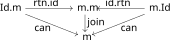
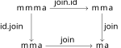

This note puts together the mathematician’s monad and programmer’s monad.
Programming to Mathematics
First, we’ll outline how to construct a monad in the mathematical sense from a
monad in the programming sense. Our starting point is that both definitions are
built on an essentially agreeing concept of functor. If we let m be our
starting monad, then we’ve essentially got an endofunctor on the category of
(small) types. So the task is to build the structure maps Id -> m and m . m
-> m, where Id denotes the identity functor and . denotes functorial
composition, which is the monoidal product in the category of endofunctors.
For the easy part, note that a functorial mapping (i.e., natural transformation)
Id -> m amounts to a map a -> m a for each type a. This is just return!
For the harder part, we want to build morphisms m (m a) -> m a for each type
a. Turns out there’s a generic map we can define as follows:
join :: Monad m => m (m a) -> m a
join mmx =
do mx <- mmx
x <- mx
return x
From here, one has to prove that the return and join maps satisfy the unit and
multiplication axioms for a monad1. Notice that, by the condition mx >>=
return = mx, join can be re-expressed simply as join mmx = mmx >>= id, or
join = ? >>= id.
For the unit axiom, we need the following diagram to commute on both triangles.

I ought to clarify what I mean by rtn.id and its sibling. What we really want
is the “horizontal composition” of natural transformations between the natural
transformations id :: m => m and rtn :: Id => m. Concretely, the natural
transformation is defined on each type a via rtn.id :: m a -> m (m a), mx ->
return mx. Now, running this through join gives, by definition:
join (return mx) = (return mx) >>= id = mx
The sibling case turns out to be more difficult (in my opinion). This is mainly
due to the fact that the horizontal composition id.rtn can be defined by
id.rtn = fmap return. Reasoning about fmap return and join requires an
understanding between the monad structures with fmap, and discussion on this
seems spread thin. For this reason, the commutativity of the associativity
diagram is also left undone:

Here, the maps join.id and id.join are defined similarly to that found for
mathematical monads:
id.join = fmap join, join.id = join
Examples: It’s worth thinking through a few examples on what join explicitly
does.
Maybe. This is a map Maybe (Maybe a) -> Maybe a. By definition,
for any mx :: Maybe a:join (Just (mx)) = (Just mx) >>= id
= (return mx) >>= id
= mx
join Nothing = Nothing >>= id
= Nothing
From this definition, it’s easy to see that join has the correct conditions.
For example, fmap join :: m m m a -> m m a is just the map given by Just mmx
-> Just (join mmx) and Nothing -> Nothing.
[]. If xss is a list of lists, then by definitionjoin xss = xss >>= id = [x | xs <- xss, x <- id xs]
So join is just concatenating lists! With this concrete definition then it’s
again easy to see it satisfies the correct diagrams. For example, there’s two
obvious ways to turn a lists of lists of lists into a single, non-nested, list.
Thinking about something like [[xs1,...,xsn],...,[zs1,...,zsm]], you either
start with [xs1,...,xsn] ++ ... ++ [zs1,...,zsm] and then xs1++...++xsn ++
... ++ zs1++...++zsm. Or you could concatenate the “interior” lists first to
get [xs1++...+xsn, ..., zs1++zsm], but concatenating at this stage gives the
same result as the first method.
Mathematics to Programming.
Now suppose we have a mathematical monoid
and we want to define a monoid in
the programming sense. As above, it’ll turn out that the unit map
coincides with the return function. The interesting part comes in how to
define the bind operator.
First of all, we learned in the last section that the join map should
correspond to the multiplication
. But we want to recover the bind
operator (>>=) :: m a -> (a -> m b) -> m b. For this, let f :: a -> m a and
mx :: m a be two arbitrary inputs to this operator. We need to define mx >>=
f. Using the functorial map fmap on morphisms, we have that fmap f :: m a ->
m (m b) has the appropriate type to take mx as an input. Further, (fmap f)
mx has type m (m b), so that join ((fmap f) mx) has type m b. So we can
define
mx >>= f = (join . fmap f) mx
As well as satisfying certain naturality conditions!